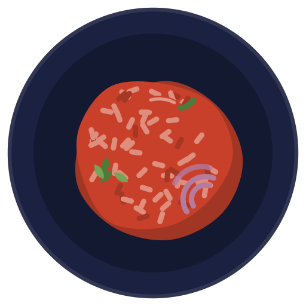
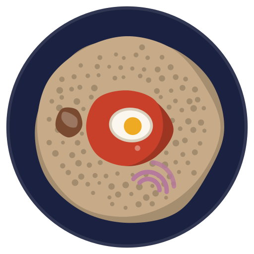
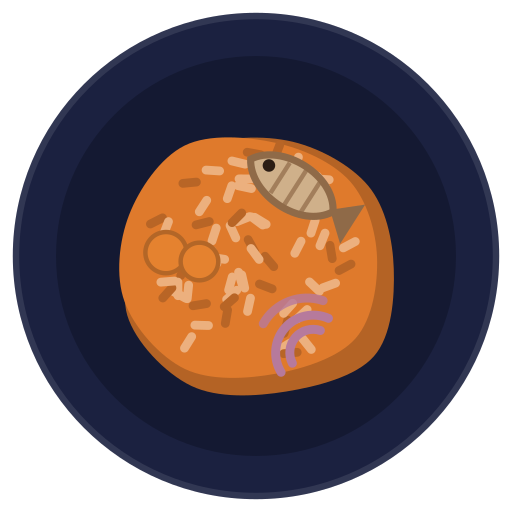
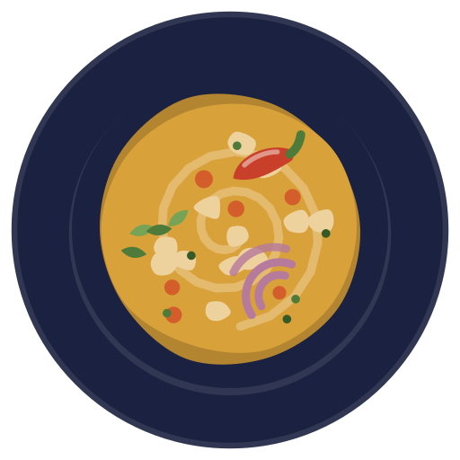
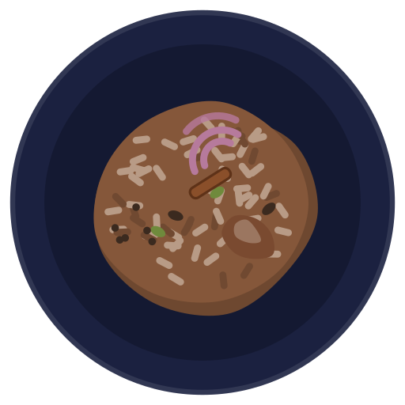
Built on Meta Muse
Cook from your roots, with what you already have
A kitchen concierge for West and East African home food. Show it your kitchen and it tells you what you can cook tonight, from 23 dishes across 12 peoples.
Party Jollof, Yoruba
Recipe apps know countries, not kitchens
A Yoruba pantry and an Igbo pantry are not the same pantry. PantryRoots files food under the peoples who cook it, and starts from what is already on your shelf.
Nigerian Yoruba, Igbo, Hausa-Fulani
Kenyan Kikuyu, Luo, Swahili Coast
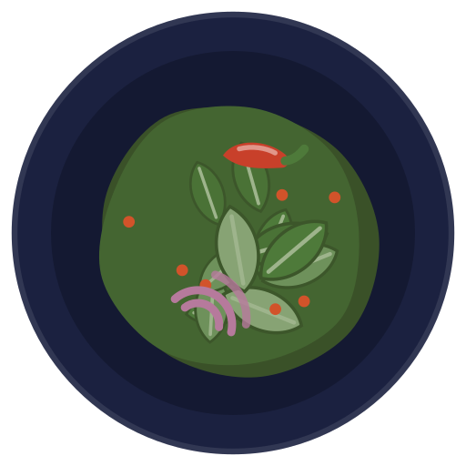
01
Step 1: Scan your kitchen
Photograph a shelf, sweep the fridge in a short video, or snap a grocery receipt. Your pantry fills in, and anything going off soon is flagged to use first.
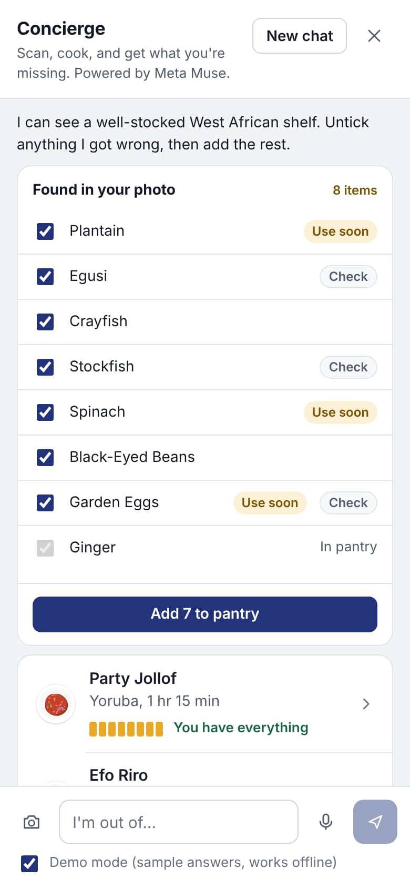
02
Step 2: Cook what's there
Dishes are ranked by your pantry and your roots. The gold match meter shows, ingredient by ingredient, what you already have. Cook mode walks you through each step and starts the timers for you.
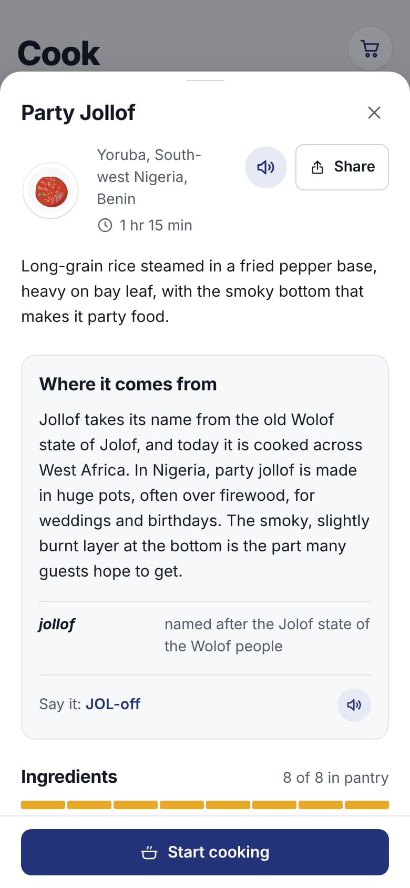
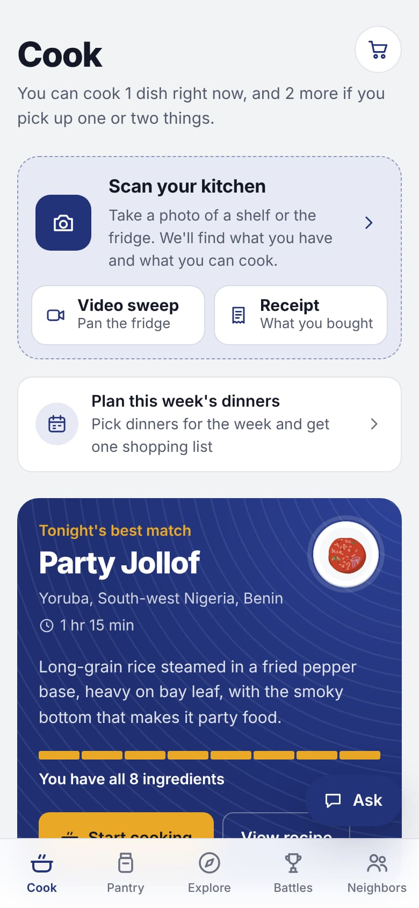
03
Step 3: Out of something?
Say "I'm out of palm oil." You get an honest swap, the nearest open shops with drive time, and delivery through Instacart, Walmart or DoorDash.
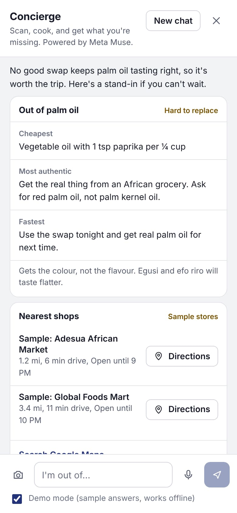
04
Step 4: Keep grandma's recipe
Scan her handwritten card. Muse reads the handwriting and turns it into a recipe you can cook from, in her words.
Also in the app: a shopping list, a week plan, and macros you can copy into MyFitnessPal.
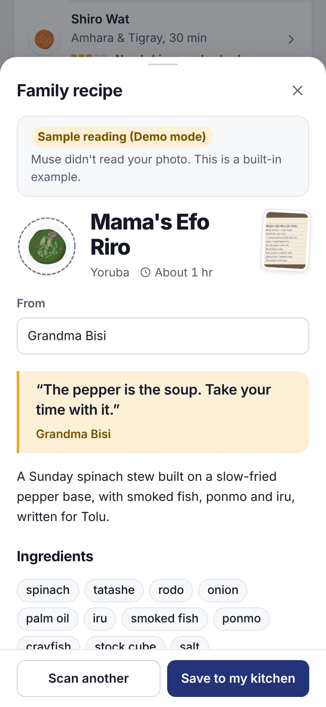
Peoples, not countries
23 curated dishes from 12 peoples across West and East Africa.
Thieboudienne Wolof
Party Jollof Yoruba
Egusi Soup Igbo
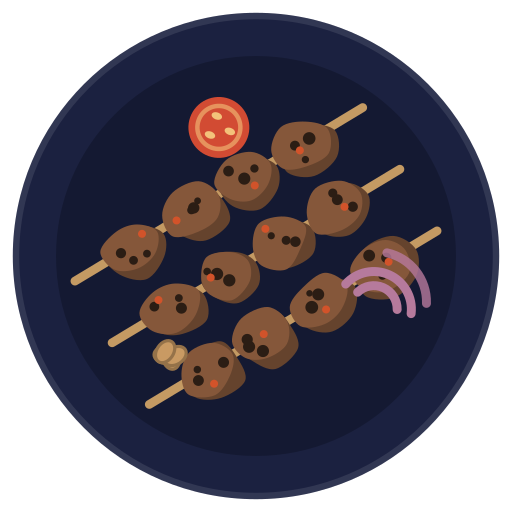
Suya Hausa-Fulani
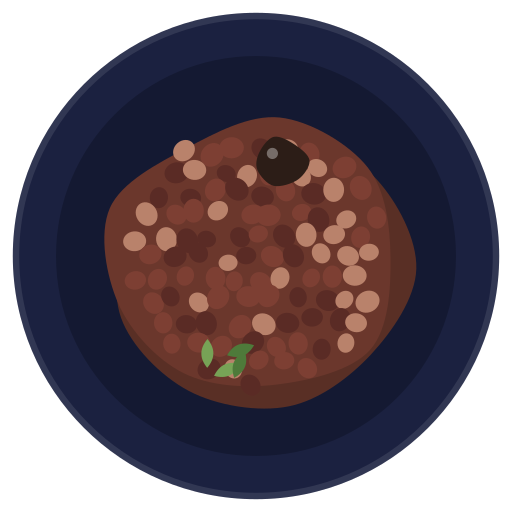
Waakye Akan
Doro Wat & Injera Amhara & Tigray
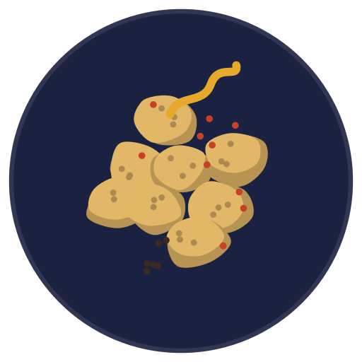
Chechebsa Oromo
Swahili Pilau Swahili Coast
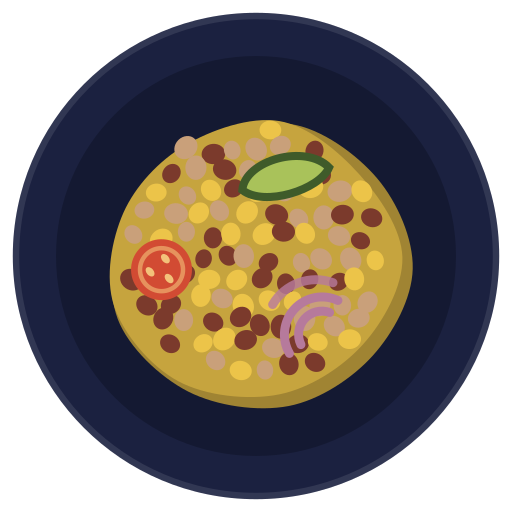
Githeri Kikuyu
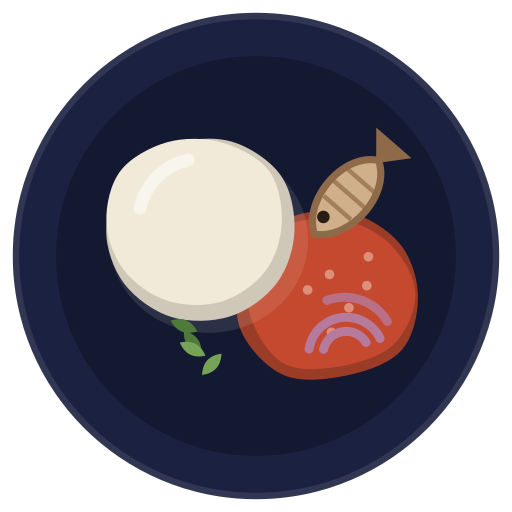
Ugali & Fried Tilapia Luo
Matooke & Luwombo Baganda
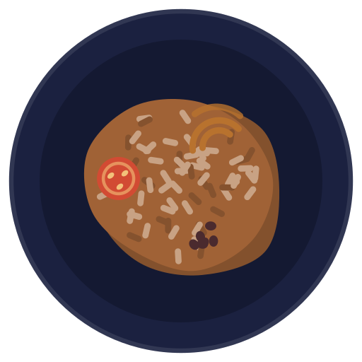
Bariis Iskukaris Somali
Built on Meta Muse
PantryRoots runs on Meta's Muse Spark through the Meta Model API. Here is what it does in the kitchen.
Sees your kitchen
Inventories a pantry from a photo, a short video sweep or a receipt.
Reads handwriting
Turns a family recipe card into a recipe, keeping the cook's words.
Judges freshness
Spots what is about to turn, so you cook it first.
Runs an agent
Finds a swap, nearby shops and a delivery cart with parallel tool calls in one turn.
Answers in structure
Replies come back as structured data the app checks before it shows a card.
Knows the food
Reasons about each dish as the people who cook it do, not as "African food".
Your kitchen is ready
- 1
Open the site on your phone.
- 2
Add to Home Screen so it opens like an app.
- 3
Scan your kitchen and see what you can cook tonight.
pantryroots-53dk.vercel.app